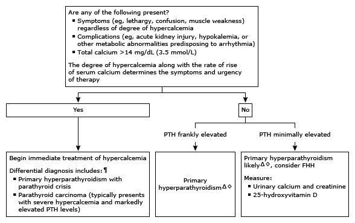

PTH: parathyroid hormone; FHH: familial hypocalciuric hypercalcemia.
* The normal range for serum calcium is approximately 8.6 to 10.2 mg/dL (2.15 to 2.54 mmol/L), and for intact PTH approximately 10 to 65 pg/mL (1.1 to 6.9 pmol/L). Interpretation of a specific abnormal test result should be based upon the reference range reported with that result. Measured calcium concentration should be corrected for any abnormality in serum albumin.
¶ It is uncommon for patients with hypercalcemia of malignancy to have elevated PTH levels, but this finding may occur rarely in individuals with hypercalcemia of malignancy and concomitant primary hyperparathyroidism or in individuals with PTH-secreting tumors, which are also rare.
Δ If the patient is taking a thiazide diuretic or lithium, discontinue (if the drug can be stopped without exacerbating the underlying condition) and remeasure calcium and PTH in 3 months. Persistent hypercalcemia with elevated or high-normal PTH after drug withdrawal suggests that the drug has unmasked primary hyperparathyroidism.
◊ In order to make management recommendations in patients with asymptomatic primary hyperparathyroidism, measure:Consider imaging: